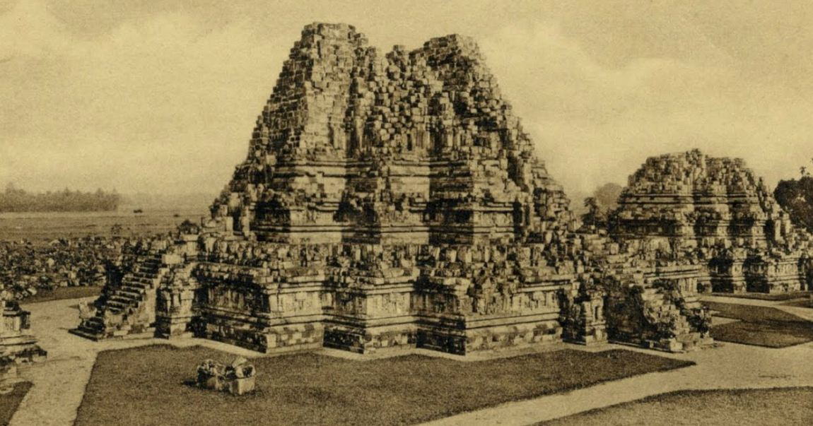

Prambanan adalah candi Hindu terbesar dan termegah yang pernah dibangun di Jawa kuno, pembangunan
candi Hindu kerajaan
ini dimulai oleh Rakai Pikatan sebagai tandingan candi Buddha Borobudur dan juga candi Sewu yang
terletak tak jauh dari
Prambanan. Beberapa sejarawan lama menduga bahwa pembangunan candi agung Hindu ini untuk
menandai kembali berkuasanya
keluarga Sanjaya atas Jawa, hal ini terkait teori wangsa kembar berbeda keyakinan yang saling
bersaing; yaitu wangsa
Sanjaya penganut Hindu dan wangsa Sailendra penganut Buddha. Pastinya, dengan dibangunnya candi
ini menandai bahwa
Hinduisme aliran Saiwa kembali mendapat dukungan keluarga kerajaan, setelah sebelumnya wangsa
Sailendra cenderung lebih
mendukung Buddha aliran Mahayana. Hal ini menandai bahwa kerajaan Medang beralih fokus dukungan
keagamaanya, dari Buddha
Mahayana ke pemujaan terhadap Siwa.
Bangunan ini pertama kali dibangun sekitar tahun 850 Masehi oleh Rakai Pikatan dan secara
berkelanjutan disempurnakan
dan diperluas oleh Raja Lokapala dan raja Balitung Maha Sambu. Berdasarkan prasati Siwagrha
berangka tahun 856 M,
bangunan suci ini dibangun untuk memuliakan dewa Siwa, dan nama asli bangunan ini dalam bahasa
Sanskerta adalah Siwagrha
(Sanskerta:Shiva-grha yang berarti: ‘Rumah Siwa’) atau Siwalaya (Sanskerta:Shiva-laya yang
berarti: ‘Ranah Siwa’ atau
‘Alam Siwa’). Dalam prasasti ini disebutkan bahwa saat pembangunan candi Siwagrha tengah
berlangsung, dilakukan juga
pekerjaan umum perubahan tata air untuk memindahkan aliran sungai di dekat candi ini. Sungai
yang dimaksud adalah sungai
Opak yang mengalir dari utara ke selatan sepanjang sisi barat kompleks candi Prambanan.
Sejarawan menduga bahwa aslinya
aliran sungai ini berbelok melengkung ke arah timur, dan dianggap terlalu dekat dengan candi
sehingga erosi sungai dapat
membahayakan konstruksi candi. Proyek tata air ini dilakukan dengan membuat sodetan sungai baru
yang memotong lengkung
sungai dengan poros utara-selatan sepanjang dinding barat di luar kompleks candi. Bekas aliran
sungai asli kemudian
ditimbun untuk memberikan lahan yang lebih luas bagi pembangunan deretan candi perwara (candi
pengawal atau candi
pendamping).
Beberapa arkeolog berpendapat bahwa arca Siwa di garbhagriha (ruang utama) dalam candi Siwa
sebagai candi utama
merupakan arca perwujudan raja Balitung, sebagai arca pedharmaan anumerta dia.
Kompleks bangunan ini secara berkala terus disempurnakan oleh raja-raja Medang Mataram
berikutnya, seperti raja Daksa
dan Tulodong, dan diperluas dengan membangun ratusan candi-candi tambahan di sekitar candi
utama. Karena kemegahan candi
ini, candi Prambanan berfungsi sebagai candi agung Kerajaan Mataram, tempat digelarnya berbagai
upacara penting
kerajaan. Pada masa puncak kejayaannya, sejarawan menduga bahwa ratusan pendeta brahmana dan
murid-muridnya berkumpul
dan menghuni pelataran luar candi ini untuk mempelajari kitab Weda dan melaksanakan berbagai
ritual dan upacara Hindu.
Sementara pusat kerajaan atau keraton kerajaan Mataram diduga terletak di suatu tempat di dekat
Prambanan di Dataran
Kewu.
Ditelantarkan
Sekitar tahun 930-an, ibu kota kerajaan berpindah ke Jawa Timur oleh Mpu Sendok, yang mendirikan
Wangsa Isyana. Penyebab
kepindahan pusat kekuasaan ini tidak diketahui secara pasti. Akan tetapi sangat mungkin
disebabkan oleh letusan hebat
Gunung Merapi yang menjulang sekitar 20 kilometer di utara candi Prambanan. Kemungkinan penyebab
lainnya adalah
peperangan dan perebutan kekuasaan. Setelah perpindahan ibu kota, candi Prambanan mulai telantar
dan tidak terawat,
sehingga pelan-pelan candi ini mulai rusak dan runtuh.
Bangunan candi ini diduga benar-benar runtuh akibat gempa bumi hebat pada abad ke-16. Meskipun
tidak lagi menjadi pusat
keagamaan dan ibadah umat Hindu, candi ini masih dikenali dan diketahui keberadaannya oleh warga
Jawa yang menghuni desa
sekitar. Candi-candi serta arca Durga dalam bangunan utama candi ini mengilhami dongeng rakyat
Jawa yaitu legenda Rara
Jonggrang. Setelah perpecahan Kesultanan Mataram pada tahun 1755, reruntuhan candi dan sungai
Opak di dekatnya menjadi
tanda pembatas antara wilayah Kesultanan Yogyakarta dan kasunanan Surakarta (Solo).
Ditemukan kembali

gambar:www.memdiasiana.comReruntuhan candi Prambanan segera setelah ditemukan.
Penduduk lokal warga Jawa di sekitar candi sudah mengetahui keberadaan candi ini. Akan tetapi
mereka tidak tahu latar
belakang sejarah sesungguhnya, siapakah raja dan kerajaan apa yang telah membangun monumen ini.
Sebagai hasil imajinasi,
rakyat setempat menciptakan dongeng lokal untuk menjelaskan asal-mula keberadaan candi-candi
ini; diwarnai dengan kisah
fantastis mengenai raja raksasa, ribuan candi yang dibangun oleh makhluk halus jin dan dedemit
hanya dalam tempo satu
malam, serta putri cantik yang dikutuk menjadi arca. Legenda mengenai candi Prambanan dikenal
sebagai kisah Rara
Jonggrang.
Pada tahun 1733, candi ini ditemukan oleh CA. Lons seorang berkebangsaan Belanda. Candi ini
menarik perhatian dunia
ketika pada masa pendudukan Britania atas Jawa. Ketika itu Colin Mackenzie, seorang surveyor
bawahan Sir Thomas Stamford
Raffles, menemukan candi ini. Meskipun Sir Thomas kemudian memerintahkan penyelidikan lebih
lanjut, reruntuhan candi ini
tetap telantar hingga berpuluh-puluh tahun. Penggalian tak serius dilakukan sepanjang 1880-an
yang sayangnya malah
menyuburkan praktik penjarahan ukiran dan batu candi. Kemudian pada tahun 1855 Jan Willem
IJzerman mulai membersihkan
dan memindahkan beberapa batu dan tanah dari bilik candi. Beberapa saat kemudian Isaäc Groneman
melakukan pembongkaran
besar-besaran dan batu-batu candi tersebut ditumpuk secara sembarangan di sepanjang Sungai Opak.
Arca-arca dan relief
candi diambil oleh warga Belanda dan dijadikan hiasan taman, sementara warga pribumi menggunakan
batu candi untuk bahan
bangunan dan fondasi rumah.
Pemugaran dimulai pada tahun 1918, akan tetapi upaya serius yang sesungguhnya dimulai pada tahun
1930-an. Pada tahun
1902–1903, Theodoor van Erp memelihara bagian yang rawan runtuh. Pada tahun 1918–1926,
dilanjutkan oleh Jawatan
Purbakala (Oudheidkundige Dienst) di bawah P.J. Perquin dengan cara yang lebih sistematis sesuai
kaidah arkeologi.
Sebagaimana diketahui para pendahulunya melakukan pemindahan dan pembongkaran beribu-ribu batu
secara sembarangan tanpa
memikirkan adanya usaha pemugaran kembali. Pada tahun 1926 dilanjutkan De Haan hingga akhir
hayatnya pada tahun 1930.
Pada tahun 1931 digantikan oleh Ir. V.R. van Romondt hingga pada tahun 1942 dan kemudian
diserahkan kepemimpinan
renovasi itu kepada putra Indonesia dan itu berlanjut hingga tahun 1993.
Upaya restorasi terus menerus dilakukan bahkan hingga kini. Pemugaran candi Siwa yaitu candi
utama kompleks ini
dirampungkan pada tahun 1953 dan diresmikan oleh Presiden pertama Republik Indonesia Sukarno.
ada bagian candi yang
direstorasi, menggunakan batu baru, karena batu-batu asli banyak yang dicuri atau dipakai ulang
di tempat lain. Sebuah
candi hanya akan direstorasi apabila minimal 75% batu asli masih ada. Oleh karena itu, banyak
candi-candi kecil yang tak
dibangun ulang dan hanya tampak fondasinya saja.
Kini, candi ini termasuk dalam Situs Warisan Dunia yang dilindungi oleh UNESCO, status ini
diberikan UNESCO pada tahun
1991. Kini, beberapa bagian candi Prambanan tengah direstorasi untuk memperbaiki kerusakan
akibat gempa Yogyakarta 2006.
Gempa ini telah merusak sejumlah bangunan dan patung.